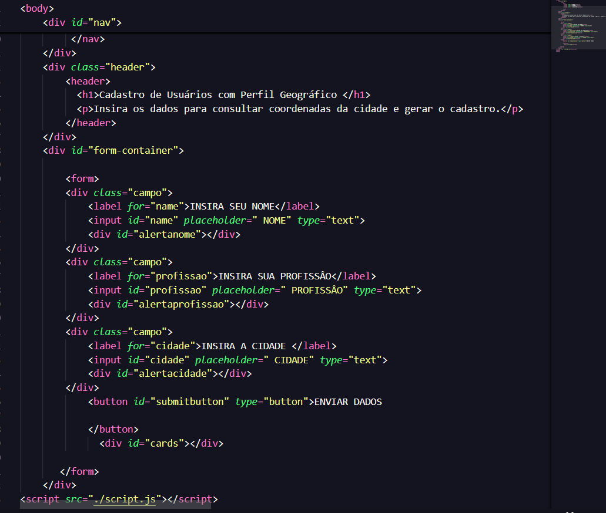
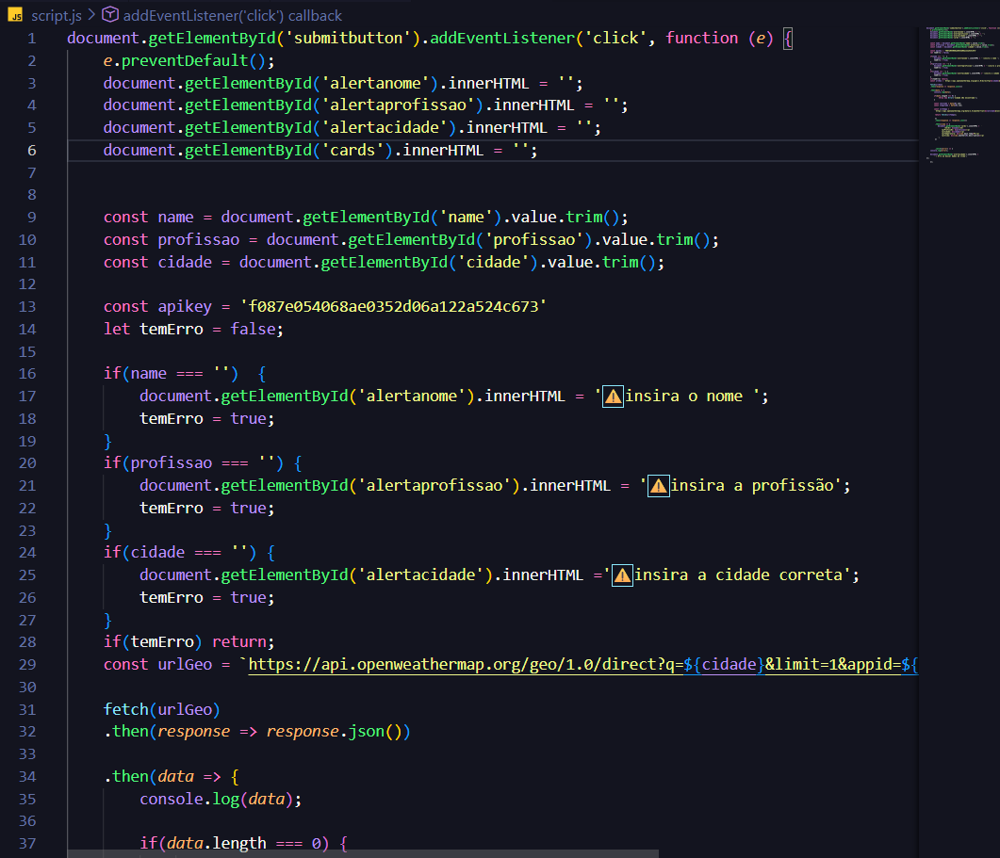
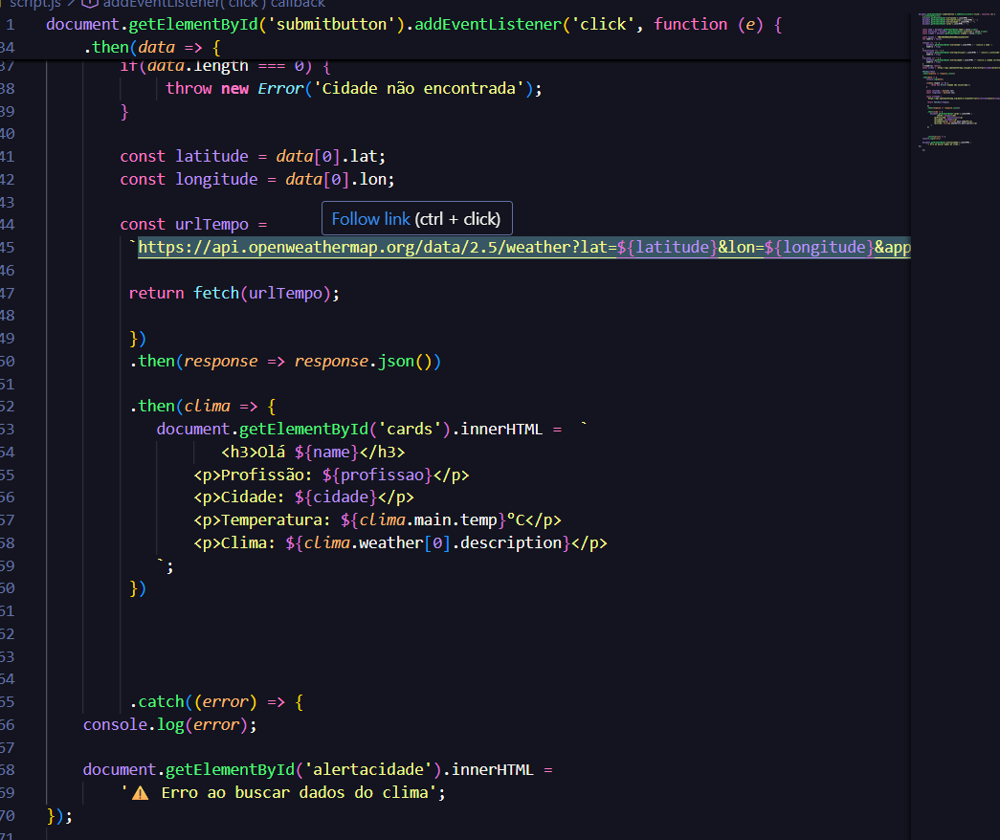

🌦️ SOBRE O PROJETO
Olá! Meu nome é Jonathas e estou em processo de transição para a área de programação. Atualmente tenho aproximadamente 7 meses de estudos em Front-End, desenvolvendo projetos para consolidar conceitos e transformar teoria em prática. Este projeto — Cadastro de Usuários com Perfil Geográfico — representa uma parte importante do conhecimento que adquiri até o momento.
📌 Objetivo do Projeto
Construir uma aplicação capaz de realizar cadastro de usuários e integrar dados geográficos utilizando uma API pública, simulando uma aplicação real.
🛠 Tecnologias Aplicadas
- HTML5
- CSS3
- JavaScript
- Fetch Assíncrono
- Manipulação DOM
- Consumo de API
- Validação de Campos
- Tratamento de Erros
💻 Desenvolvimento
Durante o desenvolvimento foram aplicados conceitos de estruturação com HTML, estilização com CSS, lógica utilizando JavaScript, manipulação dinâmica da interface através do DOM e integração com API.
📷 Trechos do Código



🚀 Sobre Mim
Tenho aproximadamente 7 meses de estudo em Front-End. Este projeto representa meu conhecimento adquirido até o momento e demonstra minha evolução prática no desenvolvimento web.